神经语言模型的 scaling laws
Jared Kaplan∗（Johns Hopkins University、OpenAI；jaredk@jhu.edu），Sam McCandlish∗（OpenAI；sam@openai.com）。
Tom Henighan（OpenAI；henighan@openai.com），Tom B. Brown（OpenAI；tom@openai.com），Benjamin Chess（OpenAI；bchess@openai.com），Rewon Child（OpenAI；rewon@openai.com）。
Scott Gray（OpenAI；scott@openai.com），Alec Radford（OpenAI；alec@openai.com），Jeffrey Wu（OpenAI；jeffwu@openai.com），Dario Amodei（OpenAI；damodei@openai.com）。
arXiv:2001.08361v1 [cs.LG]，2020 年 1 月 23 日。
摘要
我们研究以交叉熵损失衡量的语言模型性能的经验 scaling laws。损失随模型规模、数据集规模和训练所用计算量呈幂律变化，其中一些趋势跨越了七个以上数量级。其他架构细节，例如网络宽度或深度，在很大范围内影响甚微。简单的方程描述了过拟合对模型／数据集规模的依赖，以及训练速度对模型规模的依赖。这些关系使我们能够确定固定计算预算的最优分配方式。更大的模型具有显著更高的样本效率，因此，计算效率最优的训练方式是在相对适量的数据上训练非常大的模型，并在距离收敛还很远时停止。
∗同等贡献。
贡献：Jared Kaplan 和 Sam McCandlish 主导研究。Tom Henighan 贡献了 LSTM 实验。Tom Brown、Rewon Child、Scott Gray 和 Alec Radford 开发了优化后的 Transformer 实现。Jeff Wu、Benjamin Chess 和 Alec Radford 开发了文本数据集。Dario Amodei 在整个项目中提供指导。
目录
- 1 引言 · 2
- 2 背景与方法 · 6
- 3 经验结果与基本幂律 · 7
- 4 描绘无限数据极限与过拟合 · 10
- 5 随模型规模与训练时间变化的 scaling laws · 12
- 6 计算预算的最优分配 · 14
- 7 相关工作 · 18
- 8 讨论 · 18
- 附录 · 20
- A 幂律汇总 · 20
- B 计算效率前沿的经验模型 · 20
- C 注意事项 · 22
- D 补充图 · 23
1 引言
语言为人工智能研究提供了一个自然的领域，因为绝大多数推理任务都可以用语言高效表达和评估，而世界上的文本为通过生成式建模开展无监督学习提供了丰富数据。最近，深度学习在语言建模方面进展迅速，最先进的模型 [RNSS18, DCLT18, YDY+19, LOG+19, RSR+19] 在许多具体任务上接近人类水平 [WPN+19]，包括根据提示撰写连贯的多段文本样本 [RWC+19]。
人们可能预期，语言建模性能取决于模型架构、神经模型的大小、训练所用的计算能力，以及这一训练过程可用的数据。在本文中，我们将实证研究语言建模损失对所有这些因素的依赖，重点关注 Transformer 架构 [VSP+17, LSP+18]。语言任务性能的上限很高、下限很低，使我们能够研究跨越七个以上数量级的规模趋势。
在全文中，我们将观察到，性能作为训练时间、上下文长度、数据集规模、模型规模和计算预算的函数，呈现精确的幂律缩放关系。
1.1 概要
对于 Transformer 语言模型，我们的主要发现如下：
2此处展示的是使用足够小的 batch size 时预测的计算量。与纯经验数据的比较见图 13。
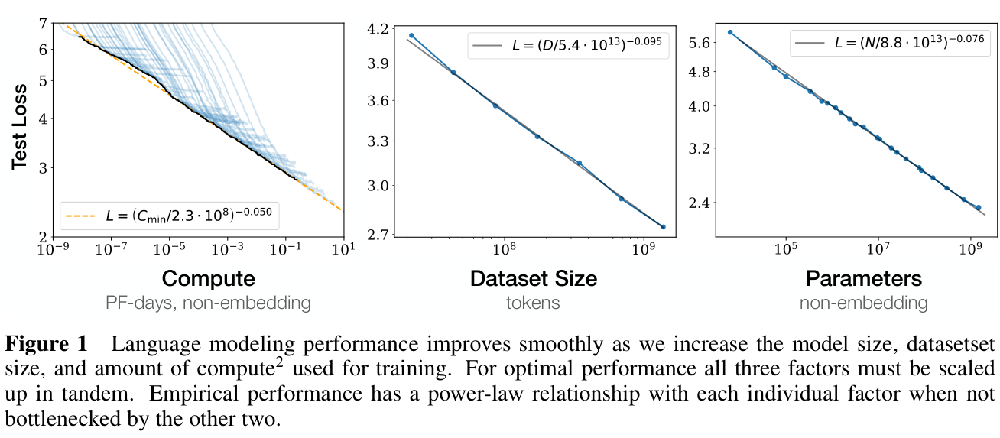
性能强烈依赖规模，但较少依赖模型形状：模型性能最强烈地依赖规模，规模由三个因素构成：模型参数数量 \(N\)（不含 embeddings）、数据集规模 \(D\)，以及训练所用计算量 \(C\)。在合理范围内，性能对其他架构超参数，例如深度与宽度之间的取舍，依赖很弱。（第 3 节）
平滑幂律：当其余两个因素不构成瓶颈时，性能与三个规模因素 \(N,D,C\) 中的每一个均呈幂律关系，趋势跨越六个以上数量级（见图 1）。在高端规模上，我们没有观察到偏离这些趋势的迹象，但性能最终必然会在损失达到零之前趋于平坦。（第 3 节）
过拟合的普适性：只要同步扩大 \(N\) 和 \(D\)，性能就会以可预测的方式提升；但如果固定其中一个、增大另一个，就会进入收益递减区域。性能惩罚以可预测的方式取决于比值 \(N^{0.74}/D\)，这意味着每当我们将模型规模扩大 8 倍，仅需将数据增加约 5 倍便可避免惩罚。（第 4 节）
训练的普适性：训练曲线遵循可预测的幂律，其参数大致独立于模型规模。通过外推训练曲线的早期部分，我们能够粗略预测训练更长时间后可以达到的损失。（第 5 节）
迁移随测试性能提升而改善：在不同于训练分布的文本上评估模型时，结果与训练验证集上的结果高度相关，损失大致相差一个常数——换言之，迁移到不同分布会产生恒定惩罚，除此之外，其改善大体与训练集性能一致。（第 3.2.2 节）
样本效率：大模型比小模型具有更高的样本效率，使用更少的优化步骤（图 2）和更少的数据点（图 4），就能达到相同的性能水平。
收敛是低效的：在固定计算预算 \(C\) 下，如果模型规模 \(N\) 和可用数据 \(D\) 没有其他限制，训练非常大的模型，并在距离收敛还很远时停止，可取得最优性能（见图 3）。因此，计算效率最高的训练，其样本效率会远高于根据小模型训练至收敛而得到的预期；数据需求仅随训练计算量按 \(D\sim C^{0.27}\) 缓慢增长。（第 6 节）
最优 batch size：训练这些模型的理想 batch size 近似仅为损失的一个幂，并且仍可通过测量 gradient 噪声尺度 [MKAT18] 确定；对于我们能够训练的最大模型，在收敛时这一值大致为 100 万至 200 万 token。（第 5.1 节）
这些结果共同表明，当我们适当扩大模型规模、数据量和计算量时，语言建模性能会平滑且可预测地改善。我们预计，更大的语言模型将比现有模型具有更好的性能和更高的样本效率。
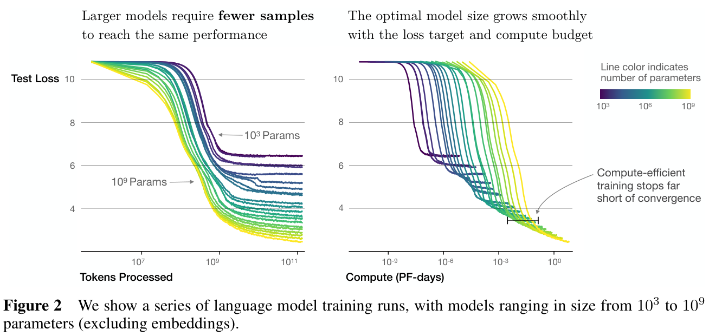
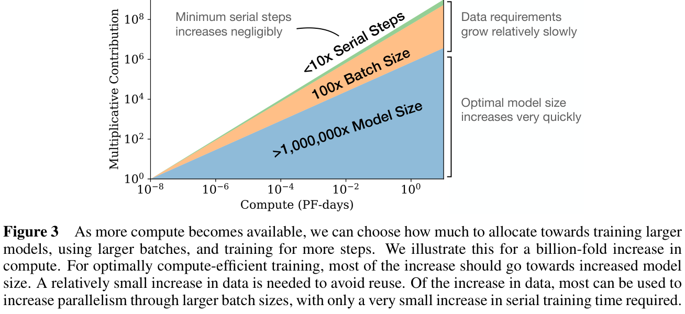
1.2 scaling laws 概要
当性能仅受到非 embedding 参数数量 \(N\)、数据集规模 \(D\)，或最优分配的计算预算 \(C_{\min}\) 中某一项的限制时，可以用幂律预测经过自回归语言建模训练的 Transformer 的测试损失（见图 1）：
- 对于参数数量有限、在足够大的数据集上训练至收敛的模型：
\[L(N)=(N_c/N)^{\alpha_N};\quad\alpha_N\sim0.076,\quad N_c\sim8.8\times10^{13}\text{（非 embedding 参数）}.\qquad\text{(1.1)}\]
- 对于在有限数据集上采用早停训练的大模型：
\[L(D)=(D_c/D)^{\alpha_D};\quad\alpha_D\sim0.095,\quad D_c\sim5.4\times10^{13}\text{ token}.\qquad\text{(1.2)}\]
- 当训练计算量有限、数据集足够大、模型大小最优，并且 batch size 足够小（从而最优地3利用计算量）时：
\[L(C_{\min})=(C_c^{\min}/C_{\min})^{\alpha_C^{\min}};\quad\alpha_C^{\min}\sim0.050,\quad C_c^{\min}\sim3.1\times10^8\text{ PF-days}.\qquad\text{(1.3)}\]
3我们还观察到，在固定 batch size 训练时，训练计算量 \(C\) 呈现经验幂律趋势（图 1）；但预测应使用随 \(C_{\min}\) 的趋势。二者通过式（5.5）关联。
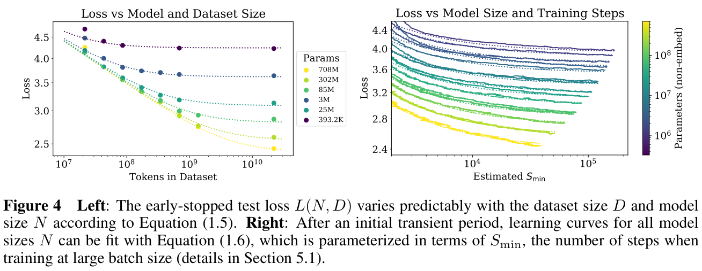
这些关系在 \(C_{\min}\) 上跨越八个数量级，在 \(N\) 上跨越六个数量级，在 \(D\) 上跨越两个以上数量级。它们对模型形状和其他 Transformer 超参数（深度、宽度、自 attention 头数）的依赖很弱，具体数值与 WebText2 训练集 [RWC+19] 相关。幂律指数 \(\alpha_N,\alpha_D,\alpha_C^{\min}\) 规定了扩大 \(N,D,C_{\min}\) 时预期的性能改善程度；例如，将参数量翻倍，会使损失乘以 \(2^{-\alpha_N}=0.95\)。\(N_c,C_c^{\min},D_c\) 的精确数值取决于词表大小和 tokenization，因此没有基本意义。
决定数据并行速度／效率权衡的临界 batch size [MKAT18]，也大致遵循关于 \(L\) 的幂律：
\[B_{\mathrm{crit}}(L)=\frac{B_*}{L^{1/\alpha_B}},\quad B_*\sim2\cdot10^8\text{ token},\quad\alpha_B\sim0.21.\qquad\text{(1.4)}\]
式（1.1）和（1.2）共同表明，在增大模型规模时，应按 \(D\propto N^{\alpha_N/\alpha_D}\sim N^{0.74}\) 次线性地增大数据集。事实上，我们发现，一个结合（1.1）和（1.2）的方程就能描述对 \(N\) 和 \(D\) 的同时依赖，并决定过拟合程度：
\[L(N,D)=\left[\left(\frac{N_c}{N}\right)^{\alpha_N/\alpha_D}+\frac{D_c}{D}\right]^{\alpha_D}.\qquad\text{(1.5)}\]
拟合结果见图 4 左图。我们猜想，这一函数形式也可能用来参数化其他生成式建模任务训练后的对数似然。
在无限数据极限下，对给定模型执行有限次参数更新 \(S\) 时，经过初始的暂态阶段后，学习曲线可以由下式精确拟合（见图 4 右图）：
\[L(N,S)=\left(\frac{N_c}{N}\right)^{\alpha_N}+\left(\frac{S_c}{S_{\min}(S)}\right)^{\alpha_S}.\qquad\text{(1.6)}\]
其中 \(S_c\approx2.1\times10^3\)、\(\alpha_S\approx0.76\)，\(S_{\min}(S)\) 是根据式（5.4）估计的最少可能优化步数（参数更新次数）。
在固定计算预算 \(C\) 下、没有其他限制时，式（1.6）预测，最优模型规模 \(N\)、最优 batch size \(B\)、最优步数 \(S\) 和数据集规模 \(D\) 应按下述方式增长：
\[N\propto C^{\alpha_C^{\min}/\alpha_N},\quad B\propto C^{\alpha_C^{\min}/\alpha_B},\quad S\propto C^{\alpha_C^{\min}/\alpha_S},\quad D=B\cdot S.\qquad\text{(1.7)}\]
其中
\[\alpha_C^{\min}=1/(1/\alpha_S+1/\alpha_B+1/\alpha_N).\qquad\text{(1.8)}\]
这与经验最优结果 \(N\propto C_{\min}^{0.73}\)、\(B\propto C_{\min}^{0.24}\)、\(S\propto C_{\min}^{0.03}\) 非常吻合。随着计算预算 \(C\) 增加，应主要将其投入更大的模型，而无需大幅增加训练时间或数据集规模（见图 3）。这还意味着，模型越大，样本效率越高。实际中，受硬件限制，研究者通常会使用较小的模型、训练较长的时间，其计算效率低于最高水平（接下页）。
（承上页）最优性能与总计算量之间呈幂律关系（见式（1.3））。
我们为式（1.5）提供一些基本的理论动机，分析学习曲线的拟合及其对训练时间的含义，并按 token 细分结果。我们还简要比较了 LSTM 和循环 Transformer [DGV+18]。
1.3 记号
我们使用以下记号：
- \(L\)：以 nat 为单位的交叉熵损失。通常对一个上下文中的 token 取平均，但有时也报告上下文中特定 token 的损失。
- \(N\)：模型参数数量，不含所有词表与位置 embeddings。
- \(C\approx6NBS\)：非 embedding 总训练计算量的估计，其中 \(B\) 为 batch size，\(S\) 为训练步数（即参数更新次数）。数值以 PF-days 表示，其中一个 PF-day 为 \(10^{15}\times24\times3600=8.64\times10^{19}\) 次浮点运算。
- \(D\)：以 token 数计的数据集规模。
- \(B_{\mathrm{crit}}\)：临界 batch size [MKAT18]，在第 5.1 节定义和讨论。采用临界 batch size 训练，可在时间和计算效率间取得大致最优的折中。
- \(C_{\min}\)：达到给定损失所需的最小非 embedding 计算量的估计。即模型使用远小于临界 batch size 的 batch size 训练时将使用的训练计算量。
- \(S_{\min}\)：达到给定损失所需最少训练步数的估计。它也是模型使用远大于临界 batch size 的 batch size 训练时将使用的训练步数。
- \(\alpha_X\)：损失按 \(L(X)\propto1/X^{\alpha_X}\) 变化的幂律指数，其中 \(X\) 可以是 \(N,D,C,S,B,C_{\min}\) 中任意一个。
2 背景与方法
我们在 WebText 数据集 [RWC+19] 的扩展版本 WebText2 上训练语言模型，使用 BPE [SHB15] 进行 tokenization，词表大小 \(n_{\mathrm{vocab}}=50257\)。我们优化在 1024-token 上下文上平均的自回归对数似然（即交叉熵损失），它也是我们的主要性能指标。我们记录 WebText2 测试分布及若干其他文本分布上的损失。我们主要训练仅含 decoder [LSP+18, RNSS18] 的 Transformer [VSP+17] 模型，但也训练 LSTM 模型和 Universal Transformer [DGV+18] 作为比较。
2.1 Transformer 的参数量与计算量缩放
我们用超参数 \(n_{\mathrm{layer}}\)（层数）、\(d_{\mathrm{model}}\)（residual stream 维度）、\(d_{\mathrm{ff}}\)（中间前馈层维度）、\(d_{\mathrm{attn}}\)（attention 输出维度）和 \(n_{\mathrm{heads}}\)（每层 attention 头数）参数化 Transformer 架构。输入上下文包含 \(n_{\mathrm{ctx}}\) 个 token，除非另有说明，否则 \(n_{\mathrm{ctx}}=1024\)。
我们用 \(N\) 表示模型规模，将其定义为非 embedding 参数数量：
\[\begin{aligned}N&\approx2d_{\mathrm{model}}n_{\mathrm{layer}}(2d_{\mathrm{attn}}+d_{\mathrm{ff}})\\&=12n_{\mathrm{layer}}d_{\mathrm{model}}^2,\quad\text{采用标准设置 }d_{\mathrm{attn}}=d_{\mathrm{ff}}/4=d_{\mathrm{model}}.\end{aligned}\qquad\text{(2.1)}\]
其中忽略了偏置及其他次主导项。我们的模型还具有含 \(n_{\mathrm{vocab}}d_{\mathrm{model}}\) 个参数的 embedding 矩阵，以及含 \(n_{\mathrm{ctx}}d_{\mathrm{model}}\) 个参数的位置 embeddings，但讨论“模型规模”\(N\) 时不计入这些参数；我们将看到，这样会产生明显更清晰的 scaling laws。
Transformer 的一次前向传播大约需要
\[C_{\mathrm{forward}}\approx2N+2n_{\mathrm{layer}}n_{\mathrm{ctx}}d_{\mathrm{model}}\qquad\text{(2.2)}\]
次加法和乘法运算，其中因子 2 来自矩阵乘法采用的乘加运算。表 1 给出了按操作细分的更详细参数量和计算量统计。
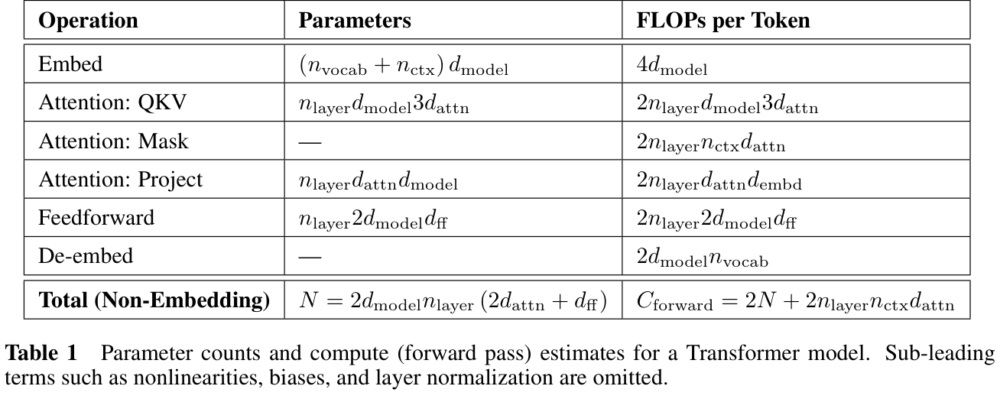
对于满足 \(d_{\mathrm{model}}>n_{\mathrm{ctx}}/12\) 的上下文和模型，每个 token 与上下文有关的计算成本占总计算量的比例相对较小。由于我们主要研究 \(d_{\mathrm{model}}\gg n_{\mathrm{ctx}}/12\) 的模型，估计训练计算量时不计入与上下文有关的项。考虑反向传播（计算量约为前向传播的两倍）后，我们将非 embedding 计算量定义为每个训练 token 约 \(C\approx6N\) 次浮点运算。
2.2 训练流程
除非另有说明，我们使用 Adam 优化器 [KB14] 训练模型，固定训练 \(2.5\times10^5\) 步，batch size 为 512 条、每条 1024 token 的序列。由于内存限制，最大的模型（超过 1B 参数）使用 Adafactor [SS18] 训练。我们尝试了多种学习率和调度，详见附录 D.6。我们发现，收敛时的结果在很大程度上独立于学习率调度。除非另有说明，我们数据中包含的所有训练运行均使用 3000 步线性 warmup、随后余弦衰减至零的学习率调度。
2.3 数据集
我们在 [RWC+19] 所述 WebText 数据集的扩展版本上训练模型。最初的 WebText 数据集抓取 Reddit 截至 2017 年 12 月的站外链接，要求至少获得 3 karma。第二版 WebText2 增加了 2018 年 1 至 10 月期间的 Reddit 站外链接，同样要求至少 3 karma。karma 阈值作为人们是否认为链接有趣或有用的启发式标准。新链接的文本通过 Newspaper3k Python 库提取。数据集共含 20.3M 篇文档，包含 96 GB 文本及 \(1.62\times10^{10}\) 个词（按 wc 定义）。然后使用 [RWC+19] 所述的可逆 tokenizer，得到 \(2.29\times10^{10}\) 个 token。我们保留其中 \(6.6\times10^8\) 个 token 作为测试集，还在类似处理的 Books Corpus [ZKZ+15]、Common Crawl [Fou]、英语 Wikipedia，以及公开 Internet Books 集合样本上测试。
3 经验结果与基本幂律
为刻画语言模型的 scaling，我们训练了大量不同的模型，改变的因素包括：
- 模型规模（从 768 到 15 亿个非 embedding 参数）；
- 数据集规模（从 2200 万到 230 亿 token）；
- 形状（包括深度、宽度、attention 头以及前馈维度）；
- 上下文长度（大多数运行为 1024，也尝试更短上下文）；
- batch size（大多数运行为 \(2^{19}\)，我们也改变它来测量临界 batch size）。
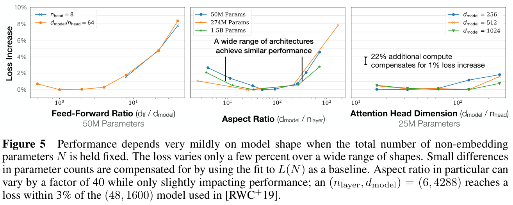
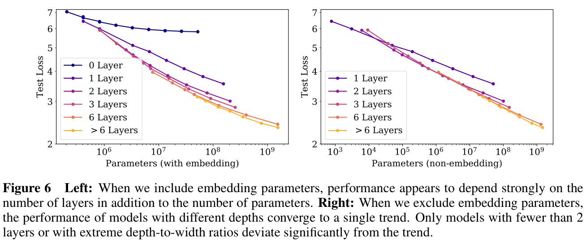
本节展示数据及具有经验依据的拟合，理论分析留待后续章节。
3.1 Transformer 形状与超参数的近似独立性
固定总非 embedding 参数量 \(N\) 时，Transformer 性能对形状参数 \(n_{\mathrm{layer}},n_{\mathrm{heads}},d_{\mathrm{ff}}\) 的依赖很弱。为确立这些结果，我们保持模型大小不变，仅改变一个超参数进行训练。\(n_{\mathrm{heads}}\) 的情况最简单。改变 \(n_{\mathrm{layer}}\) 时，我们同时改变 \(d_{\mathrm{model}}\)，以保持 \(N\approx12n_{\mathrm{layer}}d_{\mathrm{model}}^2\) 不变。同样，要在固定模型规模下改变 \(d_{\mathrm{ff}}\)，根据表 1 的参数统计，也必须同时改变 \(d_{\mathrm{model}}\)。如果更深的 Transformer 实际上表现为更浅模型的集成，正如对 ResNet 的观点 [VWB16] 所暗示的，就可以解释对 \(n_{\mathrm{layers}}\) 的独立性。结果见图 5。
3.2 随非 embedding 参数量 \(N\) 变化的性能
图 6 展示大量不同模型的性能，从形状为 \((n_{\mathrm{layer}},d_{\mathrm{model}})=(2,128)\) 的小模型，到形状介于 \((6,4288)\) 和 \((207,768)\) 的十亿参数模型。此处在完整 WebText2 数据集上训练至接近收敛，未观察到过拟合（最大的模型可能例外）。
如图 1 所示，随非 embedding 参数数量 \(N\) 变化，我们发现稳定趋势，可用式（1.5）的第一项拟合：
\[L(N)\approx\left(\frac{N_c}{N}\right)^{\alpha_N}.\qquad\text{(3.1)}\]
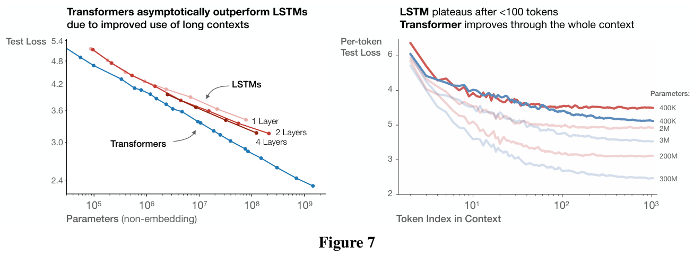
要观察这些趋势，关键在于将性能视为 \(N\) 的函数；如果使用总参数量（包括 embedding 参数），趋势会被部分掩盖（见图 6）。这表明可以缩小 embedding 矩阵而不影响性能，近期工作 [LCG+19] 也观察到这一点。
虽然这些模型在 WebText2 数据集上训练，但如图 8 所示，它们在多种其他数据集上的测试损失也呈关于 \(N\) 的幂律，且幂指数几乎相同。
3.2.1 与 LSTM 和 Universal Transformer 比较
图 7 比较了 LSTM 和 Transformer 性能随非 embedding 参数量 \(N\) 的变化。LSTM 使用相同数据集和上下文长度训练。从图中可见，对于上下文中较早出现的 token，LSTM 与 Transformer 性能相当；但对于较后的 token，LSTM 无法匹敌 Transformer。附录 D.5 给出性能与上下文位置之间的幂律关系；更大模型的幂指数越来越大，表明其快速识别模式的能力得到提升。
我们还在附录图 17 比较了标准 Transformer 和循环 Transformer [DGV+18]。后者复用参数，因此作为 \(N\) 的函数，其性能稍好，但代价是每个参数所需计算量增加。
3.2.2 数据分布之间的泛化
我们还在一组额外的文本数据分布上测试模型。图 8 展示这些数据集上测试损失与模型规模的关系；所有情况下，模型都仅在 WebText2 数据集上训练。可见，其他数据分布上的损失随模型规模平滑改善，与 WebText2 上的改善直接对应。我们发现，泛化几乎完全取决于分布内验证损失，而不依赖训练时长或接近收敛的程度。我们还未观察到其对模型深度的依赖（见附录 D.8）。
3.3 随数据集规模和计算量变化的性能
图 1 展示测试损失作为数据集规模 \(D\)（token 数）及训练计算量 \(C\) 的函数的经验趋势。
为研究随 \(D\) 的趋势，我们在 WebText2 数据集的固定子集上训练 \((n_{\mathrm{layer}},n_{\mathrm{embd}})=(36,1280)\) 的模型。当测试损失不再下降时停止训练。可见，得到的测试损失可用关于数据集规模的简单幂律拟合：
\[L(D)\approx\left(\frac{D_c}{D}\right)^{\alpha_D}.\qquad\text{(3.2)}\]
数据和拟合见图 1。
训练所用非 embedding 总计算量可估计为 \(C=6NBS\)，其中 \(B\) 是 batch size，\(S\) 是参数更新次数，因子 6 计入前向和反向传播。因此，对于给定的 \(C\)，我们可以遍历不同 \(N\) 的所有模型，寻找在相应步数上性能最好的模型（接下页）。
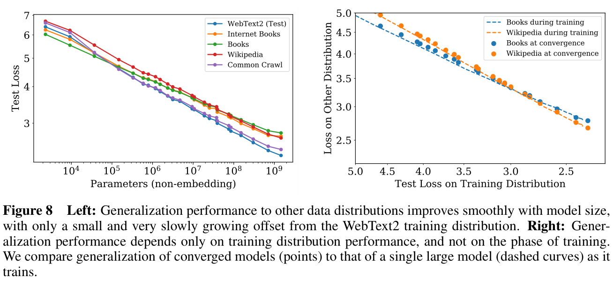
（承上页）相应步数为 \(S=\frac{C}{6BS}\)（原文如此）。注意，在这些结果中，所有模型的 batch size \(B\) 均保持固定，因此这些经验结果并非真正最优。后续章节将通过调整后的 \(C_{\min}\) 考虑这一点，以得到更清晰的趋势。
结果显示为图 1 左图中的黑色粗线，可拟合为
\[L(C)\approx\left(\frac{C_c}{C}\right)^{\alpha_C}.\qquad\text{(3.3)}\]
图中还画出了各条学习曲线，以说明单个模型何时最优。我们将在后文更仔细地研究计算量的最优分配。数据有力地表明，样本效率随模型规模提高；附录图 19 还直接展示这一点。
4 描绘无限数据极限与过拟合
第 3 节发现了语言建模性能的一些基本 scaling laws。本节同时改变 \(N\) 和 \(D\)，研究规模为 \(N\) 的模型在含 \(D\) 个 token 的数据集上训练后的性能。我们将实证说明，最优训练的测试损失符合式（1.5）的 scaling law。这为训练越来越大的模型、同时控制过拟合所需的数据量提供指导。
4.1 提出的 \(L(N,D)\) 方程
我们选择了参数化形式（1.5）（为方便再次列出）：
\[L(N,D)=\left[\left(\frac{N_c}{N}\right)^{\alpha_N/\alpha_D}+\frac{D_c}{D}\right]^{\alpha_D}.\qquad\text{(4.1)}\]
依据三条原则：
- 预期词表大小或 tokenization 的改变会使损失整体乘以一个因子。\(L(N,D)\) 的参数化形式（以及所有损失模型）必须自然容许这种缩放。
- 固定 \(D\)，令 \(N\to\infty\)，总损失应趋近 \(L(D)\)。反之，固定 \(N\)，令 \(D\to\infty\)，损失必须趋近 \(L(N)\)。
- \(L(N,D)\) 在 \(D=\infty\) 处应解析，因此可展开为 \(1/D\) 的整数幂级数。相较前两条，这条原则的理论支持明显更弱。
我们选择的 \(L(N,D)\) 满足第一条要求，因为可以随着词表改变而重新缩放 \(N_c,D_c\)。这也意味着 \(N_c,D_c\) 的数值没有基本意义。
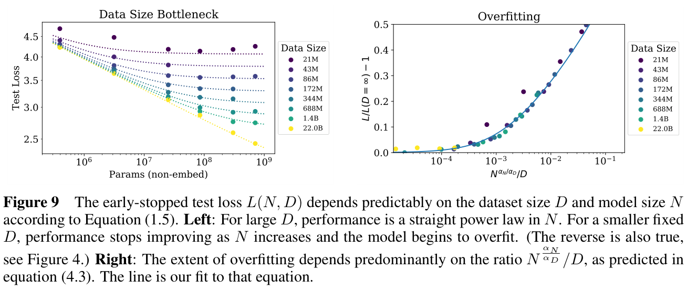
因为测试损失不再改善时我们就提前停止，并且对所有模型采用相同优化方式，所以预期更大的模型总应优于更小的模型。但在固定、有限的 \(D\) 下，我们也不认为任何模型都能接近可能达到的最优损失（即文本的熵）。类似地，大小固定的模型会受到容量限制。这些考虑促成了第二条原则。注意，无限 \(D\) 下的 \(L(N)\) 和无限 \(N\) 下的 \(L(D)\) 已完全确定 \(L(N,D)\) 的所有参数。
第三条原则更加带有猜测性质。预期在非常大的 \(D\) 下过拟合按 \(\propto1/D\) 缩放，有一个简单而一般的理由。过拟合应与数据集方差或信噪比有关 [AS17]，而后者按 \(1/D\) 缩放。对于任何平滑损失函数，这一期待都应成立，因为我们预期能够在 \(D\to\infty\) 极限附近展开损失。然而，这一论证假定 \(1/D\) 修正主导其他方差来源，例如有限 batch size 和优化效力的其他限制。没有实证确认，我们对其适用性不会很有信心。
第三条原则解释了式（1.5）中 \(N\) 与 \(D\) 作用的不对称性。也可以构造非常类似的对称表达式4，但它们没有 \(1/D\) 的整数幂展开，并且需要引入额外参数。
无论如何，我们将看到 \(L(N,D)\) 方程能很好地拟合数据，这是这一试探形式最重要的依据。
4.2 结果
我们用 10% dropout 正则化所有模型，跟踪测试损失，并在不再下降时停止。结果见图 9，其中包括对式（1.5）四个参数 \(\alpha_N,\alpha_D,N_c,D_c\) 的拟合：
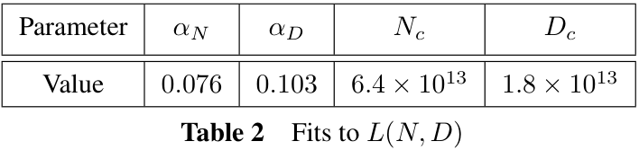
拟合十分出色，例外是数据集缩小 1024 倍、降至约 \(2\times10^7\) token 的运行。在这样小的数据集上，一个 epoch 仅包含 40 次参数更新。这种极小的数据集可能代表语言建模中的另一种情形，因为过拟合在训练早期就发生（见图 16）。还应注意，此处参数与第 3 节所得略有不同，因为这里拟合的是完整 \(L(N,D)\)，而非仅拟合 \(L(N,\infty)\) 或 \(L(\infty,D)\)。
为描绘无限数据极限的边界，我们可以直接研究过拟合程度。除了最大的模型，使用完整 22B-token WebText2 数据集训练时均未见过拟合，因此可以将其视为 \(D=\infty\) 的代表。于是，可以通过下页定义，将有限 \(D\) 与无限数据极限比较（接下页）。
4例如，也可使用 \(L(N,D)=[(N_c/N)^{\alpha_N}+(D_c/D)^{\alpha_D}]^\beta\)，但它没有 \(1/D\) 展开。
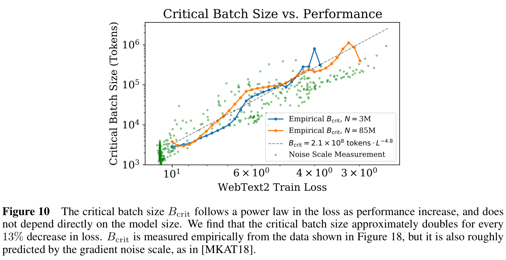
（承上页）定义
\[\delta L(N,D)\equiv\frac{L(N,D)}{L(N,\infty)}-1\qquad\text{(4.2)}\]
并研究它作为 \(N,D\) 的函数。事实上，经验上可见 \(\delta L\) 仅依赖于 \(N,D\) 的一个特定组合，如图 16 所示。这可从式（1.5）的 scaling law 推出：
\[\delta L\approx\left[1+\left(\frac{N}{N_c}\right)^{\alpha_N/\alpha_D}\frac{D_c}{D}\right]^{\alpha_D}-1.\qquad\text{(4.3)}\]
注意，在大的 \(D\) 下，此公式也可按 \(1/D\) 的幂展开为级数。
我们估计，不同随机种子带来的损失波动约为 0.02；因此，若要训练到距离收敛不超过这一阈值而避免过拟合，需要
\[D\gtrsim(5\times10^3)N^{0.74}.\qquad\text{(4.4)}\]
依照这一关系，小于 \(10^9\) 参数的模型可在 22B-token WebText2 数据集上训练且几乎不过拟合，但最大的模型会有轻微过拟合。更一般地，这一关系表明，数据集规模可以相对于模型规模次线性增长，同时避免过拟合。然而请注意，这通常不代表计算效率最高的训练。我们还应强调，在改变数据集和模型规模时，并未优化正则化（例如 dropout 概率）。
5 随模型规模与训练时间变化的 scaling laws
本节说明，一个简单的 scaling law 能很好地描述损失与模型规模 \(N\) 及训练时间的关系。首先解释如何利用 [MKAT18] 的结果定义通用训练步数 \(S_{\min}\)，以考虑大多数模型并未在最优 batch size 下训练这一事实。然后说明，可用式（1.6）拟合损失对模型规模和训练时间的依赖。后文将用这些结果预测训练计算量在模型规模和训练时间之间的最优分配，再验证这一预测。
5.1 针对在 \(B_{\mathrm{crit}}(L)\) 下训练的调整
[MKAT18] 提出了关于训练对 batch size 依赖的简单经验理论（另见 [SLA+18, ZLN+19]）。该理论认为，训练存在临界 batch size \(B_{\mathrm{crit}}\)；当 \(B\) 增至 \(B_{\mathrm{crit}}\) 以内时，增大 batch size 几乎不降低计算效率，而 \(B>B_{\mathrm{crit}}\) 后，继续增大 \(B\) 的收益递减。该理论还认为，gradient 噪声尺度能够简单地预测 \(B_{\mathrm{crit}}\)（接下页）。
（承上页）而且二者除通过已达到的损失值以外，不直接依赖模型规模。这些结果可预测训练时间和计算量如何随 batch size 改变。为尽可能有效地利用训练时间与计算量，最好使用 \(B\approx B_{\mathrm{crit}}\) 的 batch size。\(B\gg B_{\mathrm{crit}}\) 的训练使训练步数最少，而 \(B\ll B_{\mathrm{crit}}\) 使计算量最少。
更具体地，已有研究证明，对于大量不同的神经网络任务，训练到任意固定损失值 \(L\) 时，训练步数 \(S\) 和已处理数据样本数 \(E=BS\) 满足简单关系：
\[\left(\frac{S}{S_{\min}}-1\right)\left(\frac{E}{E_{\min}}-1\right)=1.\qquad\text{(5.1)}\]
其中 \(S_{\min}\) 是达到 \(L\) 所需的最少步数，\(E_{\min}\) 是必须处理的最少数据样本数。
附录图 18 验证了 Transformer 的关系（5.1）。这一关系定义了临界 batch size：
\[B_{\mathrm{crit}}(L)\equiv\frac{E_{\min}}{S_{\min}}.\qquad\text{(5.2)}\]
它是目标损失值的函数。在临界 batch size 下训练可取得大致最优的时间／计算量权衡，需要 \(2S_{\min}\) 个训练步，并处理 \(E=2E_{\min}\) 个数据样本。
图 10 将两个不同模型的临界 batch size 和 gradient 噪声尺度5画为训练损失的函数。可见 \(B_{\mathrm{crit}}(L)\) 独立于模型规模，仅依赖损失 \(L\)。因此，[MKAT18] 的预测对 Transformer 语言模型依然成立。临界 batch size 可用关于损失的幂律拟合：
\[B_{\mathrm{crit}}(L)\approx\frac{B_*}{L^{1/\alpha_B}},\qquad\text{(5.3)}\]
其中 \(B_*\approx2\times10^8\)、\(\alpha_B\approx0.21\)。
我们这样参数化 \(B_{\mathrm{crit}}(L)\)，是因为当损失接近最小值 \(L_{\min}\) 时，预期 gradient 噪声尺度会发散，并且预期 \(B_{\mathrm{crit}}\) 跟随这一噪声尺度。我们不知道 \(L_{\min}\)，因为模型没有接近它的迹象；但自然语言的熵非零，因此 \(L_{\min}>0\)。由于 \(L_{\min}\) 显然远小于已经达到的 \(L\)，我们采用了 \(L\to0\) 时 \(B_{\mathrm{crit}}\) 发散的参数化形式。
我们将用 \(B_{\mathrm{crit}}(L)\) 估计在 batch size \(B=2^{19}\) token 下的训练步数 \(S\)，与 \(B\gg B_{\mathrm{crit}}\) 下训练步数的关系。对于任意给定目标损失 \(L\)，它就是
\[S_{\min}(S)\equiv\frac{S}{1+B_{\mathrm{crit}}(L)/B}\quad\text{（最少步数，}\ B\gg B_{\mathrm{crit}}\text{）}.\qquad\text{(5.4)}\]
这还定义了使用大小为 \(N\) 的模型、在 \(B\ll B_{\mathrm{crit}}(L)\) 下训练至 \(L\) 所需计算量的临界值：
\[C_{\min}(C)\equiv\frac{C}{1+B/B_{\mathrm{crit}}(L)}\quad\text{（最少计算量，}\ B\ll B_{\mathrm{crit}}\text{）}.\qquad\text{(5.5)}\]
其中 \(C=6NBS\) 估计了 batch size 为 \(B\) 时使用的非 embedding 计算量。
5.2 \(L(N,S_{\min})\) 的结果，以及随模型规模和计算量变化的性能
现在用式（5.4）定义的 \(S_{\min}\)，对无限数据极限下损失随模型规模与训练时间的变化，得到一个简单、通用的拟合。我们用式（1.6）拟合稳定、使用 Adam 优化的训练运行，为方便再次列出：
\[L(N,S_{\min})=\left(\frac{N_c}{N}\right)^{\alpha_N}+\left(\frac{S_c}{S_{\min}}\right)^{\alpha_S}.\qquad\text{(5.6)}\]
我们纳入学习率调度 warmup 结束后的所有训练步，拟合数据得到下页的参数。
5虽然临界 batch size 与 gradient 噪声尺度大致吻合，后续分析全部使用图 18 和图 10 对 \(B_{\mathrm{crit}}\) 的直接测量。
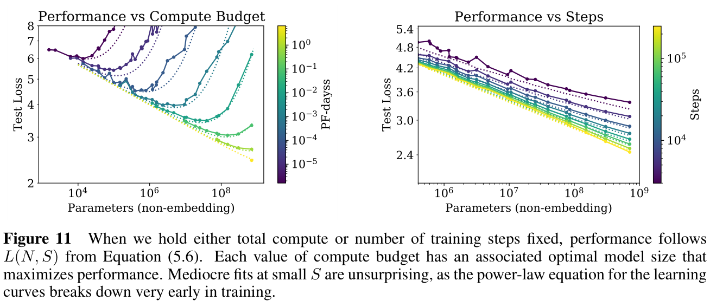
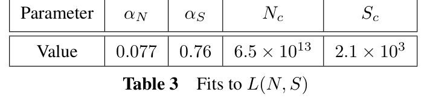
使用这些参数，就得到图 4 的学习曲线拟合。虽然拟合并不完美，但考虑到式（5.6）的简单性，我们认为其相当有说服力。
图 11 用另一种更有意思的方式可视化数据与拟合：固定训练所用非 embedding 总计算量 \(C\)，或固定步数 \(S\)，研究测试损失作为模型规模的函数。拟合时，将式（5.5）、（5.4）与上述参数及式（5.6）结合使用。
损失对 \(S_{\min}\) 的幂律依赖反映了优化器动力学与损失景观之间的相互作用。由于拟合在训练后期最好，而此时损失可能近似为二次函数，因此幂律应包含关于损失 Hessian 谱的信息。其普适性表明，Hessian 特征值密度大致独立于模型规模。
5.3 早停步数的下界
\(L(N,S_{\min})\) 的结果可推导数据受限训练中应早停步数的下界（及粗略估计）。其动机是，对于给定模型，有限 \(D\) 和无限 \(D\) 的学习曲线在达到 \(S_{\min}\approx S_{\mathrm{stop}}\) 前非常相似。因此，过拟合应正比于仅仅在 \(S_{\mathrm{stop}}\) 结束训练所带来的修正。这会低估 \(S_{\mathrm{stop}}\)，因为实际中有限 \(D\) 时测试损失下降更慢，因此需要更多训练步才能达到有限 \(D\) 下的最优测试损失。这一推理得到不等式：
\[S_{\mathrm{stop}}(N,D)\gtrsim\frac{S_c}{[L(N,D)-L(N,\infty)]^{1/\alpha_S}}.\qquad\text{(5.7)}\]
其中 \(L(N,\infty)\) 是在可用数据无限时计算的收敛损失。附录图 16 展示这一不等式及其与经验数据的比较。该图的 \(S_{\mathrm{stop}}\) 和 \(L(N,D)\) 为经验值（不过 \(S_{\mathrm{stop}}\) 经过调整，以模拟 \(B\gg B_{\mathrm{crit}}\) 的训练），而 \(L(N,\infty)\) 是用 \(L(N,D)\) 的拟合在 \(D=\infty\) 处计算得到的。
6 计算预算的最优分配
我们在图 1 右上方展示了性能作为训练所用计算量的函数的经验趋势。然而，该结果是在固定 batch size \(B\) 下训练得到的，而我们知道（接下页）。
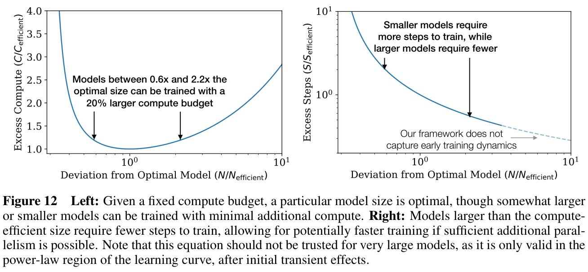
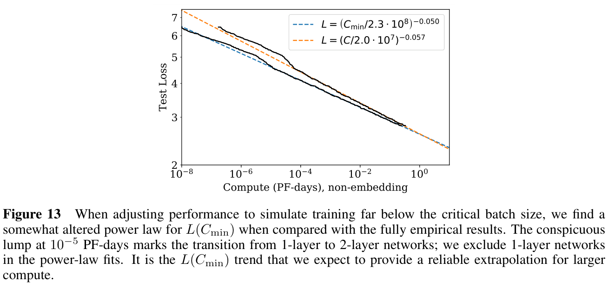
（承上页）实际上可以通过使用第 5.1 节讨论的 batch size \(B_{\mathrm{crit}}\) 更高效地训练6。较大的损失值和较小的损失值，本可分别使用更少的样本或更少的步数达到；通过统一到临界 batch size 来纠正这种低效，会得到更清晰、更可预测的趋势。
本节将调整这一疏漏。更重要的是，我们将使用第 5 节的结果，确定计算量在模型规模 \(N\) 和训练中处理的数据量，即 \(2B_{\mathrm{crit}}S_{\min}\) 之间的最优分配。我们将以经验方式，以及利用 \(L(N,S_{\min})\) 方程的理论方式确定这一分配，并证明两种方法一致。
6.1 最优性能与分配
首先研究损失作为式（5.5）中最优分配计算量的函数。结果及幂律拟合见图 13。与图 1 的计算量图相比，使用 \(C_{\min}\) 的新拟合有所改善。
给定 \(L(C_{\min})\)，自然要问：对于给定训练计算量，提供最小损失的最优模型规模 \(N(C_{\min})\) 是多少？图 14 展示最优模型规模。我们观察到，\(N(C_{\min})\)（接下页）。
6也许有人会问，为什么一开始不直接在 \(B_{\mathrm{crit}}\) 下训练？原因在于，它不仅取决于模型，还取决于希望达到的目标损失值，因此是一个不断变化的目标。
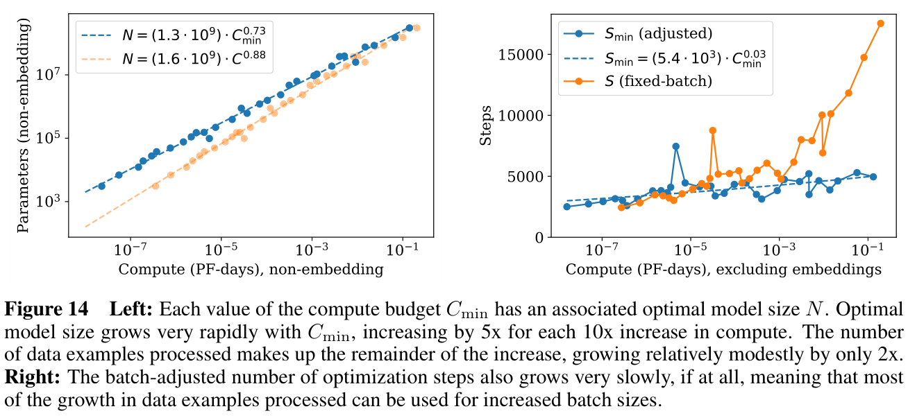
（承上页）可以非常好地用幂律拟合：
\[N(C_{\min})\propto(C_{\min})^{0.73}.\qquad\text{(6.1)}\]
图 12 展示训练非最优大小模型的影响（见附录 B.4）。
根据定义，\(C_{\min}\equiv6NB_{\mathrm{crit}}S\)，因此可用 \(N(C_{\min})\) 提取更多结果。具体而言，由于先前拟合显示 \(B\propto L^{-4.8}\)、\(L\propto C_{\min}^{-0.05}\)，可得 \(B_{\mathrm{crit}}\propto C_{\min}^{0.24}\)。由此可知，最优步数仅随计算量非常缓慢地增长：
\[S_{\min}\propto(C_{\min})^{0.03}.\qquad\text{(6.2)}\]
这与图 14 的经验结果吻合。事实上，测得的指数足够小，以至于我们的结果甚至可能与零指数相容。
因此，我们得出结论：当以最优计算量分配扩大语言建模规模时，应主要增加模型规模 \(N\)，同时按 \(B\propto B_{\mathrm{crit}}\) 增大 batch size，而串行步数几乎无需增加。由于计算高效的训练仅使用相对很少的优化步，进一步研究如何加速训练早期动力学可能是值得的。
6.2 来自 \(L(N,S_{\min})\) 的预测
\(L(C_{\min})\) 及分配结果可由第 5 节得到的 \(L(N,S_{\min})\) 方程预测。在该方程中代入 \(S_{\min}=C_{\min}/(6NB)\)，再固定训练计算量，求损失关于 \(N\) 的最小值。附录 B 详细执行了这一过程，并给出一些额外预测。
对于损失作为训练计算量的函数，我们预测：
\[L(C_{\min})=\left(\frac{C_c^{\min}}{C_{\min}}\right)^{\alpha_C^{\min}},\qquad\text{(6.3)}\]
其中
\[\alpha_C^{\min}\equiv\frac{1}{1/\alpha_S+1/\alpha_B+1/\alpha_N}\approx0.054,\qquad\text{(6.4)}\]
与图 13 的指数极为吻合。我们还预测：
\[N(C_{\min})\propto(C_{\min})^{\alpha_C^{\min}/\alpha_N}\approx(C_{\min})^{0.71}.\qquad\text{(6.5)}\]
这也与图 14 的缩放关系相符，差异在几个百分点以内。我们的 scaling laws 为语言建模性能提供了一个预测框架。
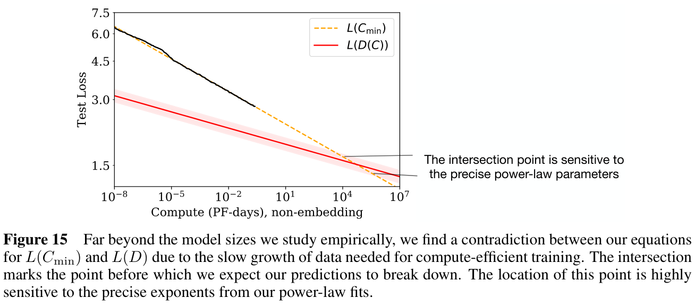
6.3 矛盾与一个猜想
在计算量、数据量或模型规模较大时，没有观察到偏离直线幂律趋势的迹象。但由于自然语言的熵非零，这些趋势最终必须趋于平坦。
事实上，本节描述的计算高效训练趋势已经包含明显矛盾。在比本文记录规模高几个数量级时，\(L(C_{\min})\) scaling law 预测的性能损失，会低于训练数据随计算量缓慢增长时可能达到的水平。这意味着 scaling laws 必须在此之前失效，但我们猜测，交点可能有更深含义：它提供了 Transformer 语言模型达到最大性能时刻的估计。
由于计算高效训练使用的数据量随计算预算增长缓慢，\(L(C_{\min})\) 预测的性能最终会碰到 \(L(D)\) 幂律设定的下界（见图 15）。下面更详细地推导。
为控制过拟合，第 4 节的结果意味着，数据集规模应按下式缩放：
\[D\propto N^{0.74}\propto C_{\min}^{0.54},\qquad\text{(6.6)}\]
其中使用了图 14 的计算高效 \(N(C_{\min})\)。
将其与计算高效训练的数据需求比较。若在临界 batch size 下训练（即 \(C=2C_{\min}\)），且训练中从不复用数据，数据使用量随计算量的增长为
\[D(C_{\min})=\frac{2C_{\min}}{6N(C_{\min})}\approx(4\times10^{10}\text{ token})(C_{\min}/\text{PF-Day})^{0.26}.\qquad\text{(6.7)}\]
这是数据集规模能随计算量有效增长的最大速率，因为它意味着仅训练一个 epoch。但它增长远慢于式（6.6）。这似乎意味着，即使训练过程从不复用任何数据，计算高效训练最终也会遇到过拟合问题！
根据图 1，当数据集规模成为瓶颈（即过拟合）时，预期损失按 \(L(D)\propto D^{-0.095}\) 变化。因此，在数据受限之后，损失随计算量按 \(L(D(C_{\min}))\propto C_{\min}^{-0.03}\) 变化。矛盾再次出现，因为它最终会与图 13 的 \(L(C_{\min})\) 预测相交，后者为 \(L(C_{\min})\propto C_{\min}^{-0.050}\)。
\(L(D(C_{\min}))\) 与 \(L(C_{\min})\) 的交点出现在
\[C^*\sim10^4\text{ PF-Days},\quad N^*\sim10^{12}\text{ 参数},\quad D^*\sim10^{12}\text{ token},\quad L^*\sim1.7\text{ nat/token}.\qquad\text{(6.8)}\]
不过数值高度不确定，随幂律拟合指数的精确值，可能向任一方向变化一个数量级。最明显的解释是，scaling laws 在到达该点时或之前就失效，而这个点在计算量和模型规模上都仍相距许多数量级。
还可以猜测，这个交点有更深含义。如果不改变数据需求的性质，就无法将模型规模增至 \(N^*\) 以上，那么这也许意味着，一旦达到 \(C_{\min}^*\) 和 \(N^*\)，就已经提取了自然语言数据中所有可靠的信息。在这一解释下，\(L^*\) 将粗略估计自然语言的每 token 熵7。在这种情况下，我们预期损失趋势会在 \(L^*\) 或之前趋于平坦。
可以通过考虑加入噪声的训练数据集版本，猜测 \(L(C_{\min})\) 趋于平坦时的函数形式。例如，在呈现给模型的每个上下文后附加随机 token 字符串，人为地使损失增加一个常数。于是，与噪声下限的距离 \(L-L_{\mathrm{noise}}\) 会成为更有意义的性能指标，即使这一距离略微下降，也可能代表定性性能显著提高。由于人工噪声对所有趋势影响相同，式（6.8）的临界点不会改变（除了 \(L^*\) 的绝对值），即使它出现在趋平之后，也可能仍有意义。
7 相关工作
幂律可以产生于许多不同来源 [THK18]。密度估计 [Was06] 和随机森林模型 [Bia12] 中随模型及数据集规模的幂律，可能与我们的结果有关。这些模型表明，幂律指数或许可以极其粗略地解释为数据中相关特征数量的倒数。
早期一些工作 [BB01, Goo01] 发现性能与数据集规模之间的幂律。近期工作 [HNA+17, HAD19] 还研究了模型规模与数据规模之间的缩放；它们可能是文献中与我们最接近的工作8。但请注意，[HNA+17] 发现数据集规模相对模型规模超线性增长，而我们发现的是次线性增长。我们对计算量最优分配的发现与 [Kom19] 有一些相似之处，包括幂律学习曲线。EfficientNet [TL19] 似乎也遵循准确率与模型规模间的近似幂律。最新工作 [RRBS19b] 研究多个数据集上数据集规模与模型规模的共同缩放，并拟合与我们类似的试探形式。
EfficientNet [TL19] 提倡对深度和宽度分别按不同系数作指数缩放，以获得图像模型的最优性能，从而使宽度作为深度的函数呈幂律。我们发现，对语言模型而言，扩大规模时这一幂应大致为 1（因为宽度／深度应保持不变）。但更重要的是，与语言模型整体规模相比，精确的架构超参数并不重要。[VWB16] 认为，深层模型可充当浅层模型的集成，或许可以解释这一发现。较早工作 [ZK16] 比较宽度与深度，发现宽 ResNet 可在图像分类上胜过深 ResNet。一些研究固定每个数据样本的计算量，它往往正比于模型参数数量；而我们同时研究模型规模和训练计算量的缩放。
多项工作 [AS17, BHMM18] 研究高度过参数化模型的泛化，发现在模型规模达到数据集规模时出现“阻塞转变”[GJS+19]（这可能需要比通常做法多许多数量级的训练，尤其不能使用早停）。我们未观察到这种转变，而发现所需训练数据相对模型规模次线性增长。关于模型规模的展开，特别是在大宽度下的展开 [JGH18, LXS+19]，可能为思考某些缩放关系提供有用框架。我们关于优化的结果，例如学习曲线形状，很可能可由带噪声二次模型解释，它能在现实设置中给出相当精确的预测 [ZLN+19]。将这一联系定量化，需要刻画 Hessian 谱 [Pap18, GKX19, GARD18]。
8 讨论
我们观察到，语言模型的对数似然损失随非 embedding 参数量 \(N\)、数据集规模 \(D\) 和优化后的训练计算量 \(C_{\min}\) 一致地缩放，概括为式（1.5）和（1.6）。相反，其对许多架构和优化超参数的依赖很弱。由于与 \(N,D,C_{\min}\) 的缩放为幂律，扩大规模存在收益递减。
7用 wc 工具定义词，WebText2 数据集平均每词 1.4 个 token，每 token 4.3 个字符。
8本工作完成后，[RRBS19a] 也出现了，对损失同时依赖模型和数据集规模作出了类似预测。
在同时改变这些参数时，我们能够精确建模损失对 \(N,D\)，或对 \(N,S\) 的依赖。我们用这些关系推导了训练大语言模型时的计算量缩放、过拟合程度、早停步数及数据需求。因此，这些缩放关系超越了简单观察，提供了一个预测框架。人们可以将它们解释为理想气体定律的类似物：后者以普适方式联系气体的宏观性质，而不依赖其微观组成的大部分细节。
自然可以猜测，这些缩放关系也适用于采用最大似然损失的其他生成式建模任务，甚至其他设置。为此，在其他领域，例如图像、音频和视频模型，以及可能的随机网络蒸馏上检验这些关系将很有意思。目前，我们不知道哪些结果依赖自然语言数据的结构、哪些具有普适性。寻找能推导这些缩放关系的理论框架也令人期待：即我们观察到的“热力学”背后的“统计力学”。这种理论可能导出其他更精确的预测，并系统地理解 scaling laws 的局限。
在自然语言领域，一个重要问题是，损失的持续改善是否会转化为相关语言任务的进步。平滑的定量变化可能掩盖重大的定性改善：“更多会带来不同”。例如，经济总量的平滑增长并不能反映支撑增长的具体技术发展。类似地，语言模型损失的平滑改善，也可能隐藏看似定性的能力变化。
我们的结果有力表明，更大的模型将继续表现得更好，并且其样本效率会远高于先前认识。大模型可能比大数据更重要。在这一背景下，值得进一步研究模型并行。深模型可通过流水线训练 [HCC+18]，将参数按深度分到不同设备，但使用更多设备最终需要更大的 batch size。另一方面，宽网络更易并行化 [SCP+18]，因为可以把大层拆分到多个 worker，串行依赖更少。稀疏性 [CGRS19, GRK17] 或分支（例如 [KSH12]）可能通过提高模型并行程度，使大网络训练更快。使用 [WRH17, WYL19] 这类在训练过程中扩展网络的方法，甚至可能在整次训练中始终处于计算效率前沿。
致谢
感谢 Shan Carter、Paul Christiano、Jack Clark、Ajeya Cotra、Ethan Dyer、Jason Eisner、Danny Hernandez、Jacob Hilton、Brice Menard、Chris Olah 和 Ilya Sutskever 的讨论，以及对本文草稿的反馈。
附录
A 幂律汇总
为便于查阅，下面汇总全文描述的主要趋势。
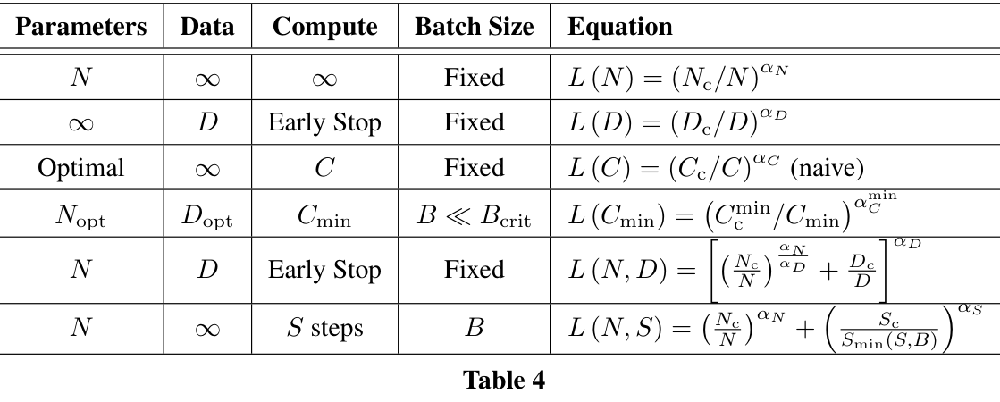
这些趋势的经验拟合值如下：
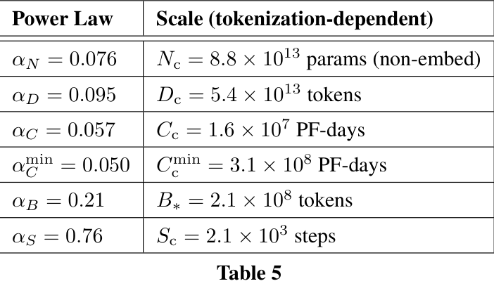
计算高效训练的最优参数如下：
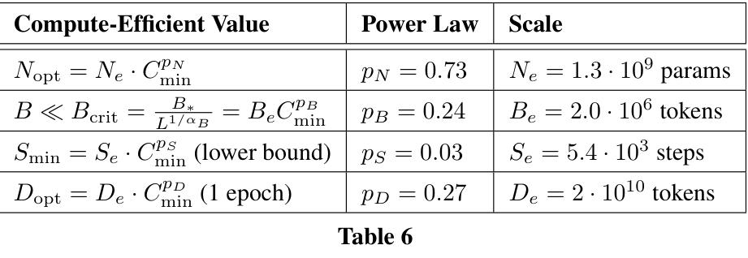
B 计算效率前沿的经验模型
本附录中，所有 \(C,S,\alpha_C\) 数值都已针对在临界 batch size \(B_{\mathrm{crit}}\) 下训练作出调整。为避免记号繁杂，省略“adj”标签。
B.1 定义方程
学习曲线的幂律拟合意味着一个简单的计算高效训练方案。本附录将推导最优性能、模型规模与训练步数作为计算预算的函数（接下页）。
（承上页）我们从式（1.6）出发，为方便再次列出：
\[L(N,S)=\left(\frac{N_c}{N}\right)^{\alpha_N}+\left(\frac{S_c}{S}\right)^{\alpha_S}.\qquad\text{(B.1)}\]
此处 \(S\) 代表在临界 batch size [MKAT18] 下训练时的参数更新次数，临界 batch size 在式（5.2）中定义9：
\[B(L)=\frac{B_*}{L^{1/\alpha_B}}.\qquad\text{(B.2)}\]
我们希望确定固定计算预算下的最优训练参数，因此代入 \(S=C/(6NB(L))\)，其中 \(C\) 是训练所用 FLOPs：
\[L(N,C)=\left(\frac{N_c}{N}\right)^{\alpha_N}+\left(6B_*S_c\frac{N}{L^{1/\alpha_B}C}\right)^{\alpha_S}.\qquad\text{(B.3)}\]
令 \(\left.\partial_NL\right|_C=0\)，求最优条件：
\[\begin{aligned}0&=\left.\frac{\partial L}{\partial N}\right|_C\\&=-\frac{\alpha_N}{N}\left(\frac{N_c}{N}\right)^{\alpha_N}+\frac{\alpha_S}{N}\left(6B_*S_c\frac{N}{L^{1/\alpha_B}C}\right)^{\alpha_S}\\&\qquad\cdot\left(1-5\frac{N}{L}\underbrace{\left.\frac{\partial L}{\partial N}\right|_C}_{=0}\right)\\\Longrightarrow\quad\frac{\alpha_N}{\alpha_S}\left(\frac{N_c}{N}\right)^{\alpha_N}&=\left(6B_*S_c\frac{N}{L^{1/\alpha_B}C}\right)^{\alpha_S}.\end{aligned}\qquad\text{(B.4)}\]
式（B.3）和（B.4）共同确定计算效率前沿。
B.2 高效训练
现在整合（B.3）和（B.4）的含义。首先，将（B.4）代入（B.3）得
\[L(N_{\mathrm{eff}}(C),C)=\left(1+\frac{\alpha_N}{\alpha_S}\right)L(N_{\mathrm{eff}},\infty),\qquad\text{(B.5)}\]
这意味着，对于计算高效训练，应训练到比收敛损失高固定比例 \(\alpha_N/\alpha_S\approx10\%\) 的位置。接下来确定最优损失如何依赖计算预算。消去 \(N\)，得到性能对计算量的幂律依赖：
\[L(C)=\left(\frac{C_c}{C}\right)^{\alpha_C},\qquad\text{(B.6)}\]
其中定义
\[\alpha_C=1/(1/\alpha_S+1/\alpha_B+1/\alpha_N)\approx0.052,\qquad\text{(B.7)}\]
\[C_c=6N_cB_*S_c\left(1+\frac{\alpha_N}{\alpha_S}\right)^{1/\alpha_S+1/\alpha_N}\left(\frac{\alpha_S}{\alpha_N}\right)^{1/\alpha_S}.\qquad\text{(B.8)}\]
类似地，可消去 \(L\)，得到 \(N(C)\)：
\[\frac{N(C)}{N_c}=\left(\frac{C}{C_c}\right)^{\alpha_C/\alpha_N}\left(1+\frac{\alpha_N}{\alpha_S}\right)^{1/\alpha_N},\qquad\text{(B.9)}\]
以及
\[S(C)=\frac{C_c}{6N_cB_*}\left(1+\frac{\alpha_N}{\alpha_S}\right)^{-1/\alpha_N}\left(\frac{C}{C_c}\right)^{\alpha_C/\alpha_S}.\qquad\text{(B.10)}\]
9这里略有歧义：可以设想在恒定 batch size \(B(L_{\mathrm{target}})\) 下训练，也可采用变化的 batch size \(\widetilde B(L)\)，其中 \(\widetilde B\) 是瞬时临界 batch size（与平均版本 \(B\) 相对）。两种方案得到相同步数，因此可忽略这一细节（见 [MKAT18]）。
B.3 与低效训练比较
研究者通常训练模型，直到看起来接近收敛。本节将上述高效训练流程与这种更常见的设置比较。将收敛因子 \(f\) 定义为相对收敛损失的百分比偏差：
\[L(N,C)=(1+f)L(N,\infty).\qquad\text{(B.11)}\]
上一节给出，计算高效训练的 \(f=\alpha_N/\alpha_S\approx10\%\)，但研究者通常使用小得多的值。这里选择 \(f'=2\%\) 作为估计。对于固定损失值，预测：
\[\frac{N_f}{N_{f'}}=\left(\frac{1+f}{1+f'}\right)^{1/\alpha_N}\approx2.7,\qquad\text{(B.12)}\]
\[\frac{S_f}{S_{f'}}=\left(\frac{1+1/f}{1+1/f'}\right)^{1/\alpha_S}\approx0.13,\qquad\text{(B.13)}\]
\[\frac{C_f}{C_{f'}}=\frac{N_f}{N_{f'}}\frac{S_f}{S_{f'}}\approx0.35.\qquad\text{(B.14)}\]
因此，为达到相同损失，计算高效训练的参数更新次数减少为原来的 \(1/7.7\)，参数数量为原来的 2.7 倍，计算量减少 65%。
B.4 非最优模型规模
可解 A.1（原文编号如此），求规模 \(N\) 的模型达到给定损失 \(L\) 所需计算量：
\[C(N,L)=\left(6B_*S_c\frac{N}{L^{1/\alpha_B}}\right)\left[L-\left(\frac{N_c}{N}\right)^{\alpha_N}\right]^{-1/\alpha_S}.\qquad\text{(B.15)}\]
利用 A.6 和 A.9（原文编号如此），可用最有效达到 \(L\) 的模型规模 \(N_{\mathrm{eff}}(L)\) 替代并消去 \(L\)。由此得到使用非最优模型规模所需额外计算量：
\[\frac{C(N,N_{\mathrm{eff}})}{C(N_{\mathrm{eff}},N_{\mathrm{eff}})}=\frac{N}{N_{\mathrm{eff}}}\left[1+\frac{\alpha_S}{\alpha_N}\left(1-\left(\frac{N_{\mathrm{eff}}}{N}\right)^{\alpha_N}\right)\right]^{-1/\alpha_S}.\qquad\text{(B.16)}\]
结果见图 X（原文如此）。规模介于最优值 0.6 倍到 2.2 倍的模型，只需将计算预算增加 20% 就可使用。考虑推理成本时，使用较小模型很有用。更大的模型能以更少步数训练到相同性能，因而在硬件充足时可增加并行度、加快训练（见图 Y，原文如此）：
\[\frac{S(N,N_{\mathrm{eff}})}{S(N_{\mathrm{eff}},N_{\mathrm{eff}})}=\left[1+\frac{\alpha_S}{\alpha_N}\left(1-\left(\frac{N_{\mathrm{eff}}}{N}\right)^{\alpha_N}\right)\right]^{-1/\alpha_S}.\qquad\text{(B.17)}\]
大 2.2 倍的模型，所需步数少 45%，代价是训练计算量多 20%。注意，不应对极大模型信赖这一方程，因为它仅在初始暂态效应之后的学习曲线幂律区域有效。
C 注意事项
本节列出分析的一些潜在限制。
- 目前，对所提出的任何 scaling law，都缺乏坚实的理论理解。随模型规模和计算量的缩放关系尤其神秘。将损失建模为带噪声二次函数，可能有助于理解固定模型规模、\(D\) 非常大时的缩放 [AS17]，以及训练后期学习曲线的形状。但模型规模非常大时随 \(D\) 的缩放仍然神秘。没有理论或对 scaling laws 修正的系统理解，就很难判断在什么情况下可以信赖它们。
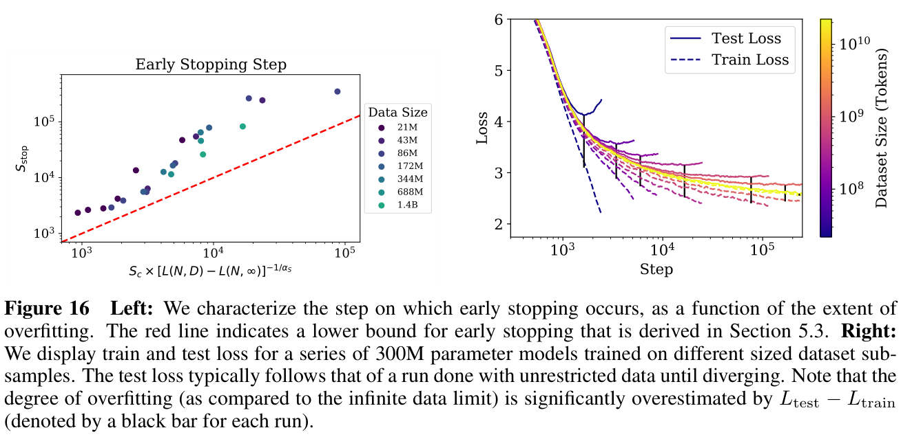
- 对于远超已探索损失范围的 \(B_{\mathrm{crit}}(L)\) 预测，我们不是特别有信心。\(B_{\mathrm{crit}}\) 的变化可能显著影响数据并行与所需串行训练步数之间的权衡，从而重大影响训练时间。
- 我们没有全面研究小数据情形；对于最小的 \(D\)（一个 epoch 仅对应 40 步），\(L(N,D)\) 拟合较差。此外，没有尝试正则化和数据增强。改进这些方面，可能从数量或性质上改变结果。
- 训练计算量采用估计 \(C\approx6NBS\)，没有计入与 \(n_{\mathrm{ctx}}\) 成正比的贡献（见第 2.1 节）。因此，在非常大的 \(n_{\mathrm{ctx}}\) 情形，具体为 \(n_{\mathrm{ctx}}\gtrsim12d_{\mathrm{model}}\) 时，关于计算量的缩放在实践中可能受到混杂因素影响。
- 我们调过学习率，也尝试过学习率调度。但可能忽略了某些对缩放有重要影响的超参数（例如初始化尺度或动量）的调节。
- 最优学习率选择对目标损失敏感。训练到接近收敛时，可能需要更小学习率避免发散。但执行短训练（例如受计算限制）时，可能可以使用更大学习率。对于未训练至收敛的运行，我们没有尝试更高学习率。
D 补充图
D.1 早停以及测试与训练的比较
第 5.3 节描述了图 16 的结果，预测早停步数下界。我们还展示给定模型规模在不同大小数据集上训练时的训练与测试损失。
D.2 Universal Transformer
图 17 比较标准 Transformer 和循环 Transformer [DGV+18] 的性能。后者复用参数，因此作为 \(N\) 的函数性能稍好，但作为计算量 \(C\) 的函数性能稍差。我们纳入了几种不同的参数复用方式。
D.3 batch size
我们利用图 18 的数据测量临界 batch size，由此能够估计图 10 中的 \(B_{\mathrm{crit}}(L)\)。
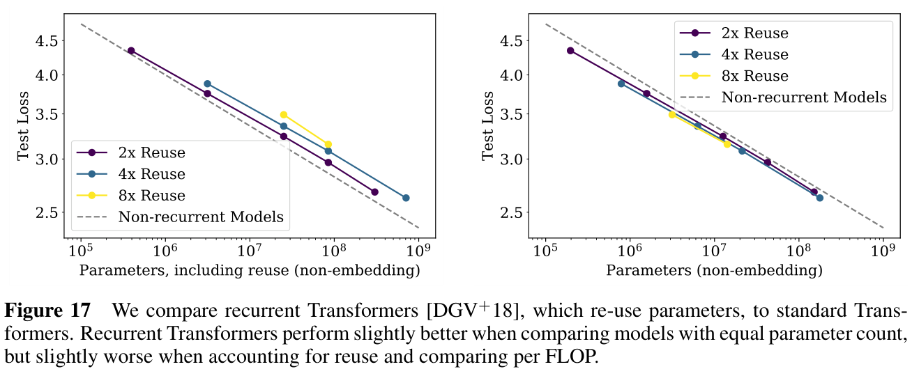
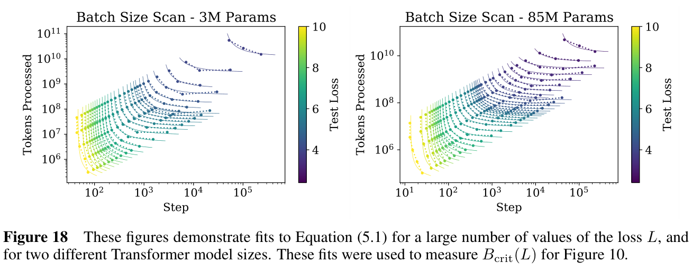
D.4 样本效率与模型规模
从图 2 很容易看出，更大模型训练更快，因此样本效率更高。图 19 提供观察这一现象的另一种方式，展示不同模型何时达到各个固定损失值。
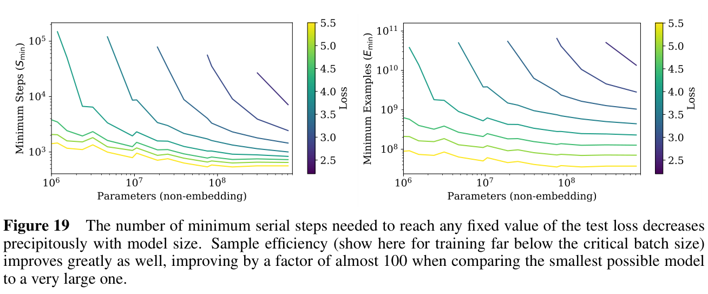
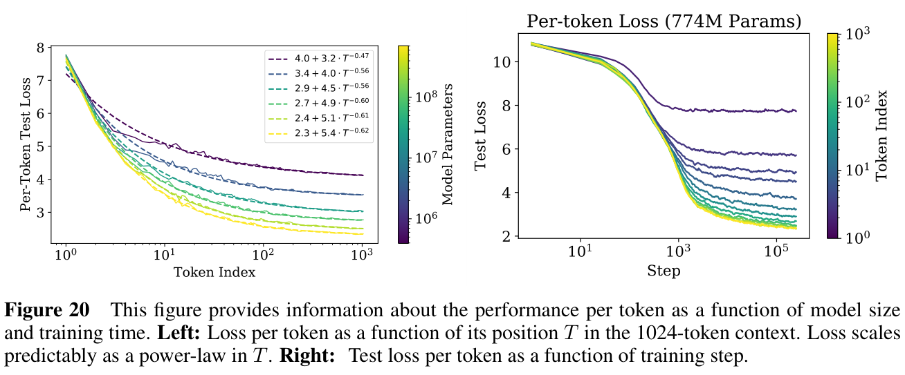
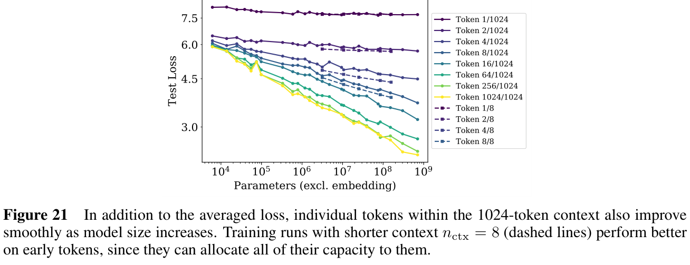
D.5 对上下文的依赖
图 21 展示上下文中不同 token 的损失随模型规模的趋势。可见，\(n_{\mathrm{ctx}}=1024\) 训练的模型，除了第一个 token 外，其他 token 都随模型规模稳步改善。
固定模型规模时，损失似乎随上下文位置 \(T\) 呈幂律缩放，见图 20。这可能来自语言底层的幂律相关性 [EP94, ACDE12, LT16]，也可能是模型架构和优化的更一般特征。它为更长上下文训练的潜在收益（或缺乏收益）提供了一些线索。更大模型不仅在 \(T=1024\) 处收敛至更好性能，也在早期 token 上改善更快，说明更大模型能在更少上下文信息下更高效地检测模式。右图展示固定模型中，每 token 性能如何随训练步变化。模型先学习短程信息，训练后期才学习较长程相关性。
我们还纳入使用极短上下文 \(n_{\mathrm{ctx}}=8\) 训练的模型，与长上下文模型比较。即使规模不大的 \(n_{\mathrm{ctx}}=8\) 模型，在非常早的 token 上，也能胜过最大的 \(n_{\mathrm{ctx}}=1024\) 模型。这也表明，使用大上下文训练更大模型，应该还能进一步改善。
D.6 学习率调度与误差分析
我们尝试了多种学习率和调度。图 22 展示小语言模型的多种调度及相应测试性能。我们得出结论，只要累计学习率足够大，且调度包含 warmup 阶段，以及最终衰减至几乎为零的学习率，学习率调度的选择基本无关紧要。不同调度间的差异（接下页）。
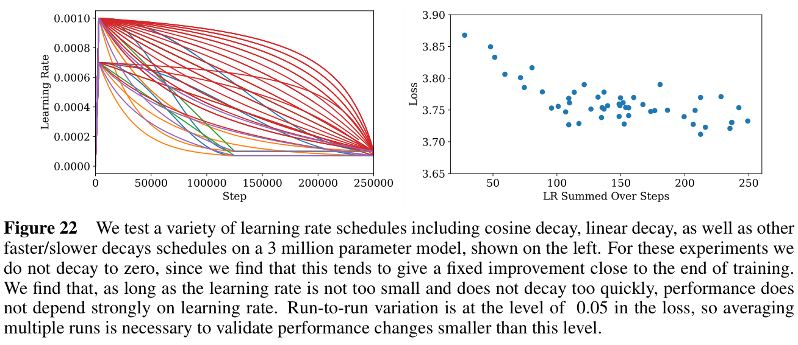
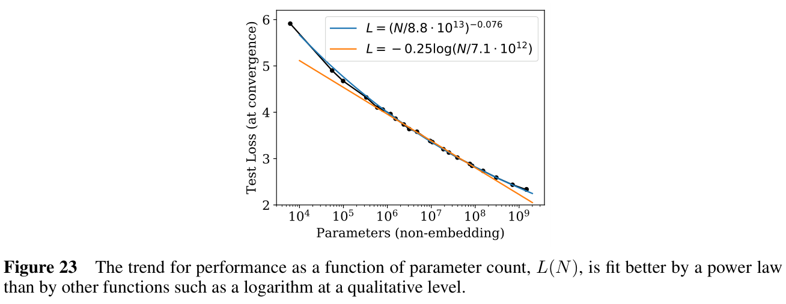
（承上页）看起来像统计噪声，并粗略衡量了不同训练运行之间的变化幅度。更大模型的实验表明，不同随机种子造成的最终测试损失差异，在不同模型规模下幅度大致恒定。
我们发现，大模型需要更小学习率防止发散，小模型则可容忍更大学习率。为实现这一点，多数运行使用以下经验法则：
\[\mathrm{LR}(N)\approx0.003239+(-0.0001395)\log(N).\qquad\text{(D.1)}\]
我们预期此公式可以改进。它可能依赖网络宽度，这种依赖很可能由初始化尺度决定。\(N>10^{10}\) 参数时，公式也会失效。尽管如此，对于所考察的模型，它已经足够有效。
D.7 拟合细节与幂律质量
我们对 \(L(N),L(C),L(D)\) 的拟合尝试了多种函数形式；从定性上看，幂律拟合远比对数等其他函数准确（见图 23）。
拟合 \(L(C)\) 时，不纳入仅 1 层的小模型，因为从 1 层到 2 层的转变会在数据中产生明显凸起。对于 \(L(N)\)，也不纳入仅 1 层的极小模型，并排除尚未完全训练至收敛的最大模型。若将它们纳入，拟合参数仅有轻微变化，无论如何，该趋势向两个方向外推都很好。
D.8 泛化与架构
图 24 表明，固定总参数量时，对其他数据分布的泛化不依赖网络深度。它似乎只取决于训练分布上的性能。
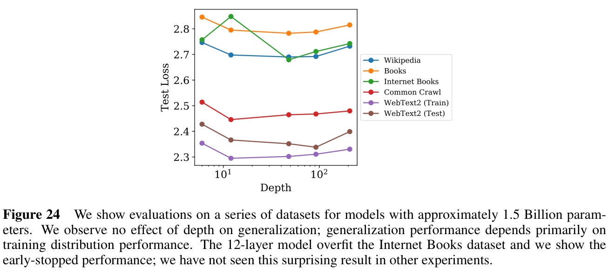
插图目录
- 简单幂律汇总 · 3
- 样本效率与计算效率示意 · 4
- 如何扩大模型规模、batch size 与串行步数 · 4
- 同时改变模型与数据规模，或模型与训练步数时的性能 · 5
- 性能对超参数调节的弱依赖 · 8
- 计入或排除 embeddings 时性能趋势的比较 · 8
- LSTM 与 Transformer 性能比较 · 9
- 对其他测试数据集的泛化 · 10
- 过拟合的普适性 · 11
- 临界 batch size · 12
- 性能与计算预算或参数更新次数的关系 · 14
- 训练非最优模型 · 15
- 经验计算量趋势与调整后趋势的比较 · 15
- 最优模型规模及串行步数与计算预算的关系 · 16
- 计算量与数据趋势间的矛盾 · 17
- 早停下界与过拟合模型的训练曲线 · 23
- Universal Transformer · 24
- batch size 扫描 · 24
- 重新审视样本效率 · 24
- 性能对上下文位置的幂律依赖 · 25
- 不同上下文位置的性能与模型规模的关系 · 25
- 学习率调度扫描 · 26
- 幂律与对数拟合比较 · 26
- 泛化与深度的关系 · 27
表格目录
- Transformer 的参数量与计算量统计 · 7
- 对 \(L(N,D)\) 的拟合 · 11
- 对 \(L(N,S)\) 的拟合 · 14
- 主要趋势方程 · 20
- 趋势拟合的关键参数 · 20
- 计算高效训练的趋势 · 20
参考文献
[ACDE12] Eduardo G Altmann, Giampaolo Cristadoro, and Mirko Degli Esposti. 论文本中长程相关性的起源. Proceedings of the National Academy of Sciences, 109(29):11582– 11587, 2012. 25
[AS17] Madhu S. Advani and Andrew M. Saxe. 神经网络泛化误差的高维动力学. arXiv, 2017, 1710.03667. 11, 18, 22
[BB01] Michele Banko and Eric Brill. 将自然语言消歧扩展至极大语料库. In Proceedings of the 39th annual meeting on association for computational linguistics, pages 26–33. Association for Computational Linguistics, 2001. 18
[BHMM18] Mikhail Belkin, Daniel Hsu, Siyuan Ma, and Soumik Mandal. 调和现代机器学习与偏差—方差权衡. arXiv, 2018, 1812.11118. 18
[Bia12] GÊrard Biau. 随机森林模型分析. Journal of Machine Learning Research, 13(Apr):1063–1095, 2012. 18
[CGRS19] Rewon Child, Scott Gray, Alec Radford, and Ilya Sutskever. 使用稀疏 transformer 生成长序列. CoRR, abs/1904.10509, 2019, 1904.10509. URL http://arxiv.org/ abs/1904.10509. 19
[DCLT18] Jacob Devlin, Ming-Wei Chang, Kenton Lee, and Kristina Toutanova. BERT：用于语言理解的深层双向 transformer 预训练, 2018, arXiv:1810.04805. 2
[DGV+18] Mostafa Dehghani, Stephan Gouws, Oriol Vinyals, Jakob Uszkoreit, and Lukasz Kaiser. Universal Transformer. CoRR, abs/1807.03819, 2018, 1807.03819. URL http://arxiv.org/ abs/1807.03819. 6, 9, 23, 24
[EP94] Werner Ebeling and Thorsten Pöschel. 文学英语中的熵与长程相关性. EPL (Europhysics Letters), 26(4):241, 1994. 25
[Fou] The Common Crawl Foundation. Common crawl. URL http://commoncrawl.org. 7
[GARD18] Guy Gur-Ari, Daniel A. Roberts, and Ethan Dyer. gradient 下降发生在一个极小子空间中. 2018, arXiv:1812.04754. 18
[GJS+19] Mario Geiger, Arthur Jacot, Stefano Spigler, Franck Gabriel, Levent Sagun, Stéphane d’Ascoli, Giulio Biroli, Clément Hongler, and Matthieu Wyart. 深度学习中泛化随参数数量变化的缩放描述. arXiv, 2019, 1901.01608. 18
[GKX19] Behrooz Ghorbani, Shankar Krishnan, and Ying Xiao. 通过 Hessian 特征值密度研究神经网络优化. CoRR, abs/1901.10159, 2019, 1901.10159. URL http://arxiv.org/abs/1901.10159. 18
[Goo01] Joshua Goodman. 语言建模的一点进展. CoRR, cs.CL/0108005, 2001. URL http://arxiv.org/abs/cs.CL/0108005. 18
[GRK17] Scott Gray, Alec Radford, and Diederik P Kingma. 用于块稀疏权重的 GPU 内核. openai.com, 2017. 19
[HAD19] Joel Hestness, Newsha Ardalani, and Gregory Diamos. 超越人类准确率：深度学习中的计算挑战. In Proceedings of the 24th Symposium on Principles and Practice of Parallel Programming, PPoPP ’19, pages 1–14, New York, NY, USA, 2019. ACM. doi:10.1145/3293883.3295710. 18
本页原文链接
- http://arxiv.org/abs/1710.03667
- http://arxiv.org/abs/1807.03819
- http://arxiv.org/abs/1812.11118
- http://arxiv.org/abs/1901.01608
- http://arxiv.org/abs/1901.10159
- http://arxiv.org/abs/1904.10509
- http://arxiv.org/abs/arXiv:1810.04805
- http://arxiv.org/abs/arXiv:1812.04754
- http://arxiv.org/abs/cs.CL/0108005
- http://commoncrawl.org
- http://dx.doi.org/10.1145/3293883.3295710
[HCC+18] Yanping Huang, Yonglong Cheng, Dehao Chen, HyoukJoong Lee, Jiquan Ngiam, Quoc V. Le, and Zhifeng Chen. GPipe：使用流水线并行高效训练巨型神经网络. CoRR, abs/1811.06965, 2018, 1811.06965. URL http://arxiv.org/abs/1811.06965. 19
[HNA+17] Joel Hestness, Sharan Narang, Newsha Ardalani, Gregory Diamos, Heewoo Jun, Hassan Kianinejad, Md. Mostofa Ali Patwary, Yang Yang, and Yanqi Zhou. 深度学习的 scaling 在经验上可预测, 2017, 1712.00409. 18
[JGH18] Arthur Jacot, Franck Gabriel, and Clément Hongler. 神经切线核：神经网络的收敛与泛化. In Advances in neural information processing systems, pages 8571–8580, 2018. 18
[KB14] Diederik P. Kingma and Jimmy Ba. Adam：一种随机优化方法, 2014, 1412.6980. 7
[Kom19] Aran Komatsuzaki. 你只需要一个 epoch, 2019, arXiv:1906.06669. 18
[KSH12] Alex Krizhevsky, Ilya Sutskever, and Geoffrey E. Hinton. 使用深度卷积神经网络进行 ImageNet 分类. In Proceedings of the 25th International Conference on Neural Information Processing Systems - Volume 1, NIPS’12, pages 1097–1105, USA, 2012. Curran Associates Inc. URL http://dl.acm.org/citation.cfm?id=2999134.2999257. 19
[LCG+19] Zhenzhong Lan, Mingda Chen, Sebastian Goodman, Kevin Gimpel, Piyush Sharma, and Radu Soricut. ALBERT：用于语言表示自监督学习的轻量 BERT, 2019, 1909.11942. 9
[LOG+19] Yinhan Liu, Myle Ott, Naman Goyal, Jingfei Du, Mandar Joshi, Danqi Chen, Omer Levy, Mike Lewis, Luke Zettlemoyer, and Veselin Stoyanov. RoBERTa：一种充分优化的 BERT 预训练方法. CoRR, abs/1907.11692, 2019, 1907.11692. URL http://arxiv.org/abs/ 1907.11692. 2
[LSP+18] Peter J. Liu, Mohammad Saleh, Etienne Pot, Ben Goodrich, Ryan Sepassi, Lukasz Kaiser, and Noam Shazeer. 通过摘要长序列生成 Wikipedia. arXiv:1801.10198 [cs], 2018, 1801.10198. URL http://arxiv.org/abs/1801.10198. 2, 6
[LT16] Henry W Lin and Max Tegmark. 形式语言与统计物理中的临界性. arXiv preprint arXiv:1606.06737, 2016. 25
[LXS+19] Jaehoon Lee, Lechao Xiao, Samuel S. Schoenholz, Yasaman Bahri, Roman Novak, Jascha SohlDickstein, and Jeffrey Pennington. 任意深度的宽神经网络在 gradient 下降下均按线性模型演化, 2019, arXiv:1902.06720. 18
[MKAT18] Sam McCandlish, Jared Kaplan, Dario Amodei, and OpenAI Dota Team. 大 batch 训练的经验模型, 2018, arXiv:1812.06162. 3, 5, 6, 12, 13, 21
[Pap18] Vardan Papyan. 大规模深度网络 Hessian 全谱：随样本量变化的动力学. CoRR, abs/1811.07062, 2018, 1811.07062. URL http://arxiv.org/abs/1811.07062. 18
[RNSS18] Alec Radford, Karthik Narasimhan, Tim Salimans, and Ilya Sutskever. 通过生成式预训练改进语言理解. URL https://s3-us-west-2. amazonaws. com/openaiassets/research-covers/languageunsupervised/language understanding paper. pdf, 2018. 2, 6
[RRBS19a] Jonathan S. Rosenfeld, Amir Rosenfeld, Yonatan Belinkov, and Nir Shavit. 跨规模泛化误差的构造性预测, 2019, 1909.12673. 18
[RRBS19b] Jonathan S. Rosenfeld, Amir Rosenfeld, Yonatan Belinkov, and Nir Shavit. 跨规模泛化误差的构造性预测, 2019, arXiv:1909.12673. 18
[RSR+19] Colin Raffel, Noam Shazeer, Adam Roberts, Katherine Lee, Sharan Narang, Michael Matena, Yanqi Zhou, Wei Li, and Peter J. Liu. 使用统一的文本到文本 transformer 探索迁移学习的极限, 2019, arXiv:1910.10683. 2
[RWC+19] Alec Radford, Jeff Wu, Rewon Child, David Luan, Dario Amodei, and Ilya Sutskever. 语言模型是无监督多任务学习器. openai.com, 2019. 2, 5, 6, 7, 8
[SCP+18] Noam Shazeer, Youlong Cheng, Niki Parmar, Dustin Tran, Ashish Vaswani, Penporn Koanantakool, Peter Hawkins, HyoukJoong Lee, Mingsheng Hong, Cliff Young, Ryan Sepassi, and Blake Hechtman. Mesh-TensorFlow：面向超级计算机的深度学习, 2018, 1811.02084. 19
[SHB15] Rico Sennrich, Barry Haddow, and Alexandra Birch. 使用子词单元进行罕见词的神经机器翻译. CoRR, 2015, 1508.07909. 6
本页原文链接
- http://arxiv.org/abs/1412.6980
- http://arxiv.org/abs/1508.07909
- http://arxiv.org/abs/1712.00409
- http://arxiv.org/abs/1801.10198
- http://arxiv.org/abs/1811.02084
- http://arxiv.org/abs/1811.06965
- http://arxiv.org/abs/1811.07062
- http://arxiv.org/abs/1907.11692
- http://arxiv.org/abs/1909.11942
- http://arxiv.org/abs/1909.12673
- http://arxiv.org/abs/arXiv:1812.06162
- http://arxiv.org/abs/arXiv:1902.06720
- http://arxiv.org/abs/arXiv:1906.06669
- http://arxiv.org/abs/arXiv:1909.12673
- http://arxiv.org/abs/arXiv:1910.10683
- http://dl.acm.org/citation.cfm?id=2999134.2999257
[SLA+18] Christopher J. Shallue, Jaehoon Lee, Joe Antognini, Jascha Sohl-Dickstein, Roy Frostig, and George E. Dahl. 测量数据并行对神经网络训练的影响, 2018, arXiv:1811.03600. 12
[SS18] Noam Shazeer and Mitchell Stern. Adafactor：具有次线性内存成本的自适应学习率. CoRR, abs/1804.04235, 2018, 1804.04235. URL http://arxiv.org/abs/1804.04235. 7
[THK18] Stefan Thurner, Rudolf Hanel, and Peter Klimek. 复杂系统理论导论. Oxford University Press, 2018. 18
[TL19] Mingxing Tan and Quoc V. Le. EfficientNet：重新思考卷积神经网络的模型缩放. CoRR, abs/1905.11946, 2019, 1905.11946. URL http://arxiv.org/abs/1905. 11946. 18
[VSP+17] Ashish Vaswani, Noam Shazeer, Niki Parmar, Jakob Uszkoreit, Llion Jones, Aidan N Gomez, Ł ukasz Kaiser, and Illia Polosukhin. 你只需要 attention. In I. Guyon, U. V. Luxburg, S. Bengio, H. Wallach, R. Fergus, S. Vishwanathan, and R. Garnett, editors, Advances in Neural Information Processing Systems 30, pages 5998–6008. Curran Associates, Inc., 2017. URL http://papers.nips.cc/paper/7181-attention-is-all-you-need.pdf. 2, 6
[VWB16] Andreas Veit, Michael Wilber, and Serge Belongie. 残差网络表现得像相对浅层网络的集成, 2016, arXiv:1605.06431. 8, 18
[Was06] Larry Wasserman. 非参数统计全论. Springer Science & Business Media, 2006. 18
[WPN+19] Alex Wang, Yada Pruksachatkun, Nikita Nangia, Amanpreet Singh, Julian Michael, Felix Hill, Omer Levy, and Samuel R. Bowman. SuperGLUE：面向通用语言理解系统、更具挑战性的基准, 2019, 1905.00537. 2
[WRH17] Yu-Xiong Wang, Deva Ramanan, and Martial Hebert. 让大脑生长：通过增加模型容量进行微调. 2017 IEEE Conference on Computer Vision and Pattern Recognition (CVPR), Jul 2017. doi:10.1109/cvpr.2017.323. 19
[WYL19] Wei Wen, Feng Yan, and Hai Li. AutoGrow：深度卷积网络中的自动层增长, 2019, 1906.02909. 19
[YDY+19] Zhilin Yang, Zihang Dai, Yiming Yang, Jaime Carbonell, Ruslan Salakhutdinov, and Quoc V. Le. XLNet：用于语言理解的广义自回归预训练, 2019, arXiv:1906.08237. 2
[ZK16] Sergey Zagoruyko and Nikos Komodakis. 宽残差网络. Procedings of the British Machine Vision Conference 2016, 2016. doi:10.5244/c.30.87. 18
[ZKZ+15] Yukun Zhu, Ryan Kiros, Rich Zemel, Ruslan Salakhutdinov, Raquel Urtasun, Antonio Torralba, and Sanja Fidler. 对齐书籍与电影：通过观看电影和阅读书籍生成故事式视觉解释. 2015 IEEE International Conference on Computer Vision (ICCV), Dec 2015. doi:10.1109/iccv.2015.11. 7
[ZLN+19] Guodong Zhang, Lala Li, Zachary Nado, James Martens, Sushant Sachdeva, George E. Dahl, Christopher J. Shallue, and Roger B. Grosse. 在何种 batch size 下，哪些算法选择重要？来自带噪声二次模型的洞见. CoRR, abs/1907.04164, 2019, 1907.04164. URL http://arxiv.org/abs/1907.04164. 12, 18
本页原文链接
- http://arxiv.org/abs/1804.04235
- http://arxiv.org/abs/1905.00537
- http://arxiv.org/abs/1905.11946
- http://arxiv.org/abs/1906.02909
- http://arxiv.org/abs/1907.04164
- http://arxiv.org/abs/arXiv:1605.06431
- http://arxiv.org/abs/arXiv:1811.03600
- http://arxiv.org/abs/arXiv:1906.08237
- http://dx.doi.org/10.1109/cvpr.2017.323
- http://dx.doi.org/10.1109/iccv.2015.11
- http://dx.doi.org/10.5244/c.30.87
- http://papers.nips.cc/paper/7181-attention-is-all-you-need.pdf